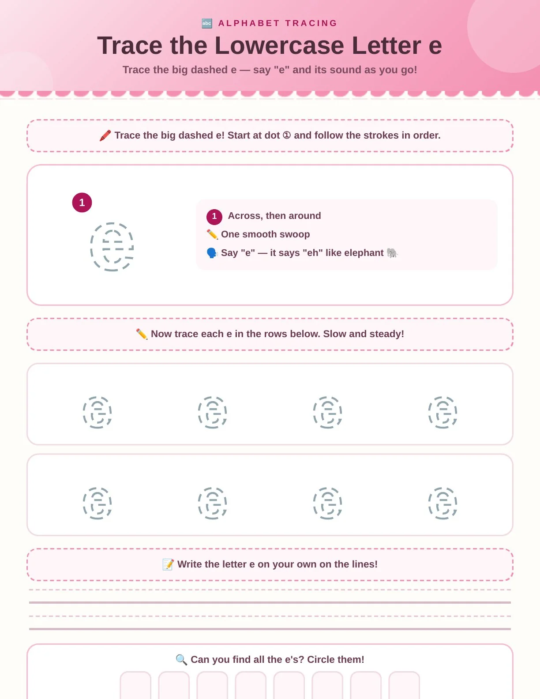

Lowercase Letter E Free Printable Lowercase Letter E Tracing Activity For Kids
Quick Answer
This free printable helps toddlers and preschoolers practice tracing the lowercase letter e — one small loop that starts with a tiny sideways stroke. The worksheet includes large guided tracing lines, directional arrows, and fun practice rows. Print as many copies as you need at home, no signup required — tracing that little loop again and again is how little hands build fine motor skills and letter recognition.
Small e is the hardest-working letter in the alphabet — it shows up in more words than any other letter, including the word “the” itself. This free printable lowercase letter e tracing worksheet gives toddlers and preschoolers a fun, no-prep way to practice its little loop — print it at home and trace the letter e through play.
✏️ Trace The Letter E
Use the printable to help your child trace the lowercase letter e, starting with the short middle stroke and curving up and around into the loop. Practice keeping it small — small e lives between the ground and middle lines only — and build confidence with early letter formation and writing skills.
Free Lowercase Letter E Tracing Printable

How To Use This Printable
- Download and print the letter e pages on letter-size paper. The print button opens the full-size page in a new tab if you prefer to print from there.
- Say the letter name and sound together before your child starts: “E says /e/, like egg, elephant and every.”
- Trace slowly: tiny sideways stroke first, then curve up, around and down to the ground line. Small e stays between the ground and middle lines — if the loop grows taller, it has wandered into capital territory.
- Play I-spy with the letter e around the house — it hides everywhere: in “the” on every book page, and in bed, hen and red.
🔤 All About Small e
Small e looks like a little snail shell. Start with a short sideways stroke at the middle line, then curve up, around, and down to the ground line, finishing with a small tail. Unlike capital E — all straight lines — small e has no straight lines at all: it is one small loop.
Small e is the hardest-working letter in English: more words contain e than any other letter, and it is the last letter of “the”, the most common word of all. It makes the short /e/ sound in bed, hen and red, and the long E sound in he, she and we.
Because small e looks nothing like its capital, children learn it as a separate shape — and it earns the effort, since nearly every sentence they will ever read is full of them. Pointing out e's in storybooks after tracing is an easy way to keep practicing.
Why Trace Lowercase Letters?
Children meet lowercase letters far more often than capitals — and e most of all, since it is the most used letter in English. It is also a shape all of its own: small e looks nothing like capital E, so it has to be learned as its own letter, not as a shrunken copy. Practicing the letter e also supports fine motor control, letter formation, and early handwriting development.
🎁 Keep Exploring Free Learning Activities
Discover more printable activities, toddler resources, and learning ideas created for busy parents.
🎁 View All Free Resources❓ Lowercase Letter E Tracing FAQ
Is this lowercase letter E tracing printable really free?
Yes — this lowercase letter e tracing printable is 100% free to download and print at home. No signup and no payment needed. Just tap the download button and print as many copies as you like — repetition is how the little loop becomes automatic.
What ages is this printable best for?
It is made for toddlers and preschoolers. Small e is a small letter with a tricky start — that little sideways stroke comes first — so a grown-up nearby helps at first. Younger toddlers trace happily with a grown-up beside them, while older preschoolers can usually manage the page on their own.
How can we practice the small letter e at home?
Open any storybook and count the letter e on one page together — there are almost always more than ten. Say its short sound — /e/, like egg — while your child traces each row. Keep sessions short and playful — a few each week is plenty.
🔗 More Free Printables You’ll Love
- Free Alphabet Coloring Pages Free printable alphabet coloring pages for little learners.
- Free Uppercase Letter E Tracing Free printable uppercase letter e tracing for little learners.
- Free Lowercase Letter F Tracing Free printable lowercase letter f tracing for little learners.
- Free Lowercase Letter B Tracing Free printable lowercase letter b tracing for little learners.